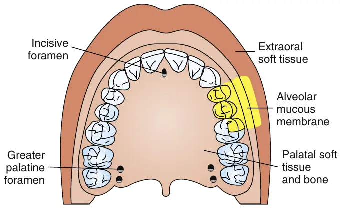
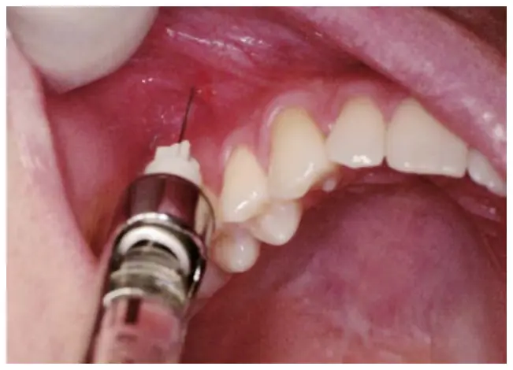

نسخه استخراجشده؛ ترجمه یا تأیید علمی انجام نشده است. وضعیت: captured
بیمار ۴۵ سالهای برای ترمیم پرمولر اول و دوم بالا سمت راست آمده است. دندانهای قدامی و مولرها در طرح درمان نیستند. با یک تزریق هر دو پرمولر را بیحس کنی یا با دو اینفیلتراسیون جدا؟

عصب آلوئولار فوقانی میانی (MSA) در کانال اینفرااوربیتال از عصب ماگزیلاری (V2) جدا میشود و همراه PSA و ASA شبکهی دندانی فوقانی را میسازد. همهی افراد عصب MSA ندارند. در این افراد ناحیهی آن را بیشتر عصب ASA و گاهی PSA عصبدهی میکند، و همان تکنیک بلاک MSA شاخههای ASA را که به پرمولرها میروند بیحس میکند.
مزیتش کمتر شدن شمار تزریق و حجم داروست. آسپیراسیون مثبت در آن کمتر از ۳٪ است. منع آن مثل هر تزریق دیگر، عفونت یا التهاب در محل ورود سوزن است.
علامت ذهنی، بیحسی لب بالاست؛ بیحسی پالپ را با تست سرما یا EPT بسنج. ناحیه نسبتاً کمرگ و از نظر آناتومیک امن است. هماتوم نادر است؛ اگر رخ داد، دستکم ۶۰ ثانیه با گاز استریل روی ناحیه فشار بده.

اشتباه رایج: سوزن خیلی نزدیک پریوست و تزریق تند، بلاک MSA را دردناک میکند. علتهای شکست: دارو بهقدر کافی بالای اپکس نرفته (رادیوگرافی را ببین و عمق را بیشتر کن)، دارو دور از استخوان و بیرون از عمق وستیبول ریخته شده (دوباره در عمق وستیبول وارد شو)، یا استخوان قوس زایگوماتیک جلوی انتشار را گرفته (بهجای آن اینفیلتراسیون، بلاک ASA یا PSA بزن).